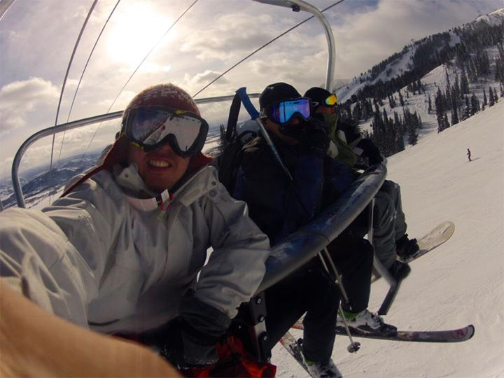

TRAVEL
I absolutely love to travel - I think immersing oneself into a completely new place and culture is a one of a kind feeling. My most exciting trip in a recent years was a three-week backpacking trip to the province of Xin Jiang, Western China.
Next on my list of places to visit is Peru and Brazil, hopefully next summer - let me know if you have cool suggestions of things to do there!
MUSIC
I picked up my first guitar when I was a kid and quickly became addicted. Along the way I've also dabbled with the piano, drums, and singing - unfortunately not an expert in any of those, but I can still jam! As for listening, I do Kanye (pre-graduation), Gavin Degraw and everything in between.
Check out some of my music (mostly old stuff) below:
PI KAPPA ALPHA
I've had an unforgettable three and a half years at Carnegie Mellon, and I dare say that most of it started from being a proud brother of Pi Kappa Alpha. It has given me lifelong friendships and the opportunities to entertain my wide-ranging interests.
GreekSing is a fundraiser in which all greek organizations compete with one another through musicals. As a member of the five-man band we had, I had an amazing time renditioning Rock of Ages, and winning it the whole competition with Delta Gamma this year. Here's a video of the full performance!
The Matthew Tembo Memorial Soccer Tournament is another philanthropy event we put on every year. With my fourth year of involvemnet, I've seen the event grow from being an 8-team tournmanet, to a 36-team tournament this past October. Thus far we've raised at least $30,000 GateWay Rehab. For the tournament, I've headed operations, marketing, the website, and last year I put together the video below as part of a Johnson&Johnson contest - check it out!
Find out more about the event visit
tembosoccer.com - designed using GoDaddy's internal website builder (would've coded it but time was of the essence)!
SNOWBOARDING
My favorite hobby is definitely snowboarding. Every Christmas (and previously Chinese New Year - when I had that holiday back in Hong Kong) my family would go skiing somewhere. Some of the best snow and terrain I've seen include Breckenridge, Utah, Vail, Tahoe, Mammoth and Niseko. Here are some recent pictures from Jacksonhole:

I'm looking forward to riding the slopes of Revelstoke with my family this Christmas!